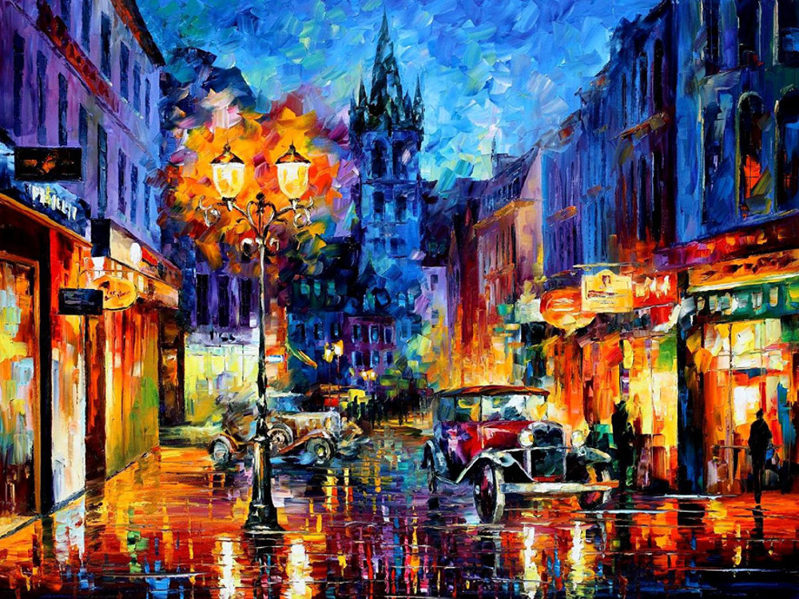
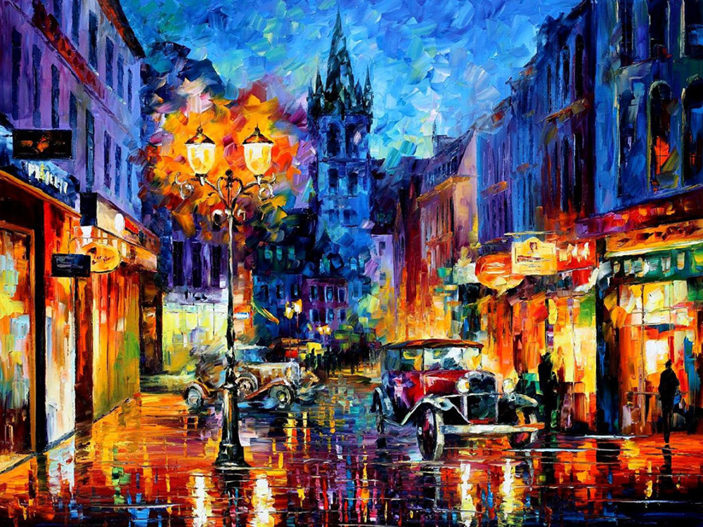

Some of Leonid Afremov Paintings
Leonid Afremov developed his own unique technique and style which is unmistakable and cannot be confused with other artists. Afremov is mainly known as being a self-representing artist who promotes and sells his work exclusively over the internet with very little exhibitions and involvement of dealers and galleries.
Leonid Afremov keeps the majority of his art politically neutral. His paintings are not offensive to anyone nor send any hidden messages. The paintings usually reflect certain personal memories and emotions. Leonid Afremov tries to draw the viewer to have a certain feeling rather than tell a story via the painting, or have the viewer see the world how he sees it. The neutral attributes of Afremov’s art make the paintings appealing to almost any social, ethnic and age group.
Human mind works in a peculiar way: we tend to cling to the past and be overcritical about the present. That’s why modern art often comes under attack. We compare new creations with classic masterpieces and seek out the smallest flaws. Perhaps the grass used to be greener a few centuries but it doesn’t mean that talented people stopped being born in our lifetime – Leonid Afremov


 
